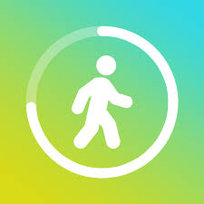

¿Realmente te pagan por caminar? Descubre las apps que lo prometen
¿Te imaginas ganar dinero simplemente por caminar? Existen aplicaciones que aseguran recompensarte por cada paso que das. Pero, ¿es esto realmente cierto? En este artículo, exploraremos algunas de las más populares y analizaremos si realmente cumplen lo que prometen.
🏃♂️ Sweatcoin
¿Qué es? Sweatcoin convierte tus pasos en una moneda virtual llamada "sweatcoins". Por cada 1,000 pasos, ganas una cierta cantidad que luego puedes canjear por productos o servicios.
¿Funciona? Sí, pero no se puede cambiar directamente por dinero. Algunas recompensas tienen costos adicionales.
StepBet

¿Qué es? Te permite apostar dinero real en ti mismo para alcanzar objetivos de pasos. Si lo logras, recuperas tu dinero y ganas una parte del bote.
¿Funciona? Sí, pero si no cumples los objetivos, pierdes tu dinero.
Fitmint

¿Qué es? Te recompensa con criptomonedas por caminar. Ganas tokens FITT que puedes canjear.
¿Funciona? Sí, pero las recompensas dependen del valor de la criptomoneda.
Winwalk

¿Qué es? Cuenta tus pasos y te da monedas virtuales para canjear por tarjetas de regalo.
¿Funciona? Sí, aunque las recompensas son pequeñas y toman tiempo en acumularse.
Conclusión
Estas apps pueden motivarte a mantenerte activo, pero no te harán rico. Asegúrate de revisar sus condiciones y cómo manejan tus datos.
Resumen:
- ✅ Apps reales
- ⚠️ No te harás rico
- 📲 Motivación para caminar más